视觉表征漫谈1——从 VAVAE 到 RAE
表征和 VAE、Diffusion 的关系
事情的一开始要从 VAVAE[1] 和 REPA[2] 说起。
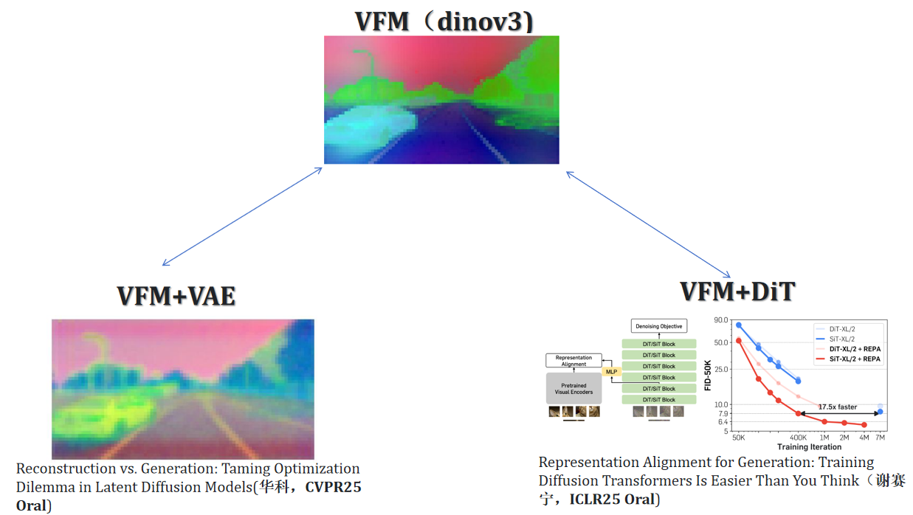
视觉表征（Visual Foundation Model，以下统一简写成 VFM），诸如 DINOv2[3]、DINOv3[4]、MAE[5]，让神经网络在高维的隐空间（Latent Space）中学会了理解现实世界的深层物理与语义逻辑，继而可以使用这个通用的隐空间表征作为各种复杂下游视觉任务的先验，完成五花八门的下游任务。
很长时间以来，VFM 并没有对 2D 图像生成有着直接的冲击，更多的工作是将 VFM 以一种归纳偏置的形式引入生成 pipeline，帮助和优化结果生成，诸如 image editing 等等任务。事情的转变要从两个 2024–2025 年的工作说起。
VFM 与 VAE
潜在扩散模型（LDM[6]）在生成高保真图像的方面在近年来表现非常出色。然而，在 VAE 的设计中始终存在一种困境：为了增加 VAE 重建原图的重建能力，最 native 的方案是增加 VAE latent 中 channel 的数量，比如将经典的 SD-VAE[7] 的 4 channel 或者 8 channel 增加到 32 channel，势必会增加 VAE 的重建性能。但是增加 channel 带来的代价是巨大的，一方面，VAVAE 论文[1:1] 指出当增加
所以，现在的 LDM 中 VAE 的训练和设计是一个 trade-off：一方面 latent 的 channel 过小会导致 latent 信息损失较大，最终 DiT 生成产生视觉伪影；一方面过大的 latent channel 会使得计算成本过高从而无法收敛。
这个反直觉的现象其实有一个很自然的类比——在离散 tokenizer（VQGAN[8]/MagViT[9]）中，当 codebook 尺寸越来越大时，codebook 利用率会急剧下降，出现"codebook collapse"的问题。连续 VAE 里高维 latent 的情形与之本质相同：当隐空间维度过大，模型学不会如何在这个空间里高效采样。
两条路线的解法：REPA 和 VAVAE
解决这个问题的思路其实很直接——既然 DiT 在 latent space 里 lost，是因为这个 space 毫无语义结构，那就给它一个语义锚点。于是社区出现了两条同期的平行路线：
路线 A（REPA，2410.06940）：在 DiT 侧打补丁
REPA[2:1] 的思路是不动 VAE，在 DiT 训练时额外加一个辅助 loss，让 DiT 的中间 hidden states 与冻结的 DINOv2 特征对齐：
$$ \mathcal{L}_{\text{total}} = \mathcal{L}_{\text{velocity}} + \lambda \cdot \mathcal{L}_{\text{REPA}} $$ $$ \mathcal{L}_{\text{REPA}} = -\mathbb{E}\left[\operatorname{sim}\!\left(f_{\text{DINO}}^{\text{patch}},\ W \cdot h_{\text{DiT}}\right)\right] $$有一个值得注意的设计细节：对齐只发生在前几个 Transformer block。实验发现前几层对齐了语义之后，后续层会自然地去专注高频细节的学习。这其实说明一件很有意思的事情：扩散模型从语义到细节的生成也有类似的层次分工，只是没有人显式地告诉它应该怎么分工——REPA 相当于在早期 layer 强制建立了语义理解的"地基"，让模型自然而然地完成剩下的"装修"。结果：SiT 在 400K 步就达到了原始 SiT 7M 步的效果，17.5 倍训练加速。
路线 B（VAVAE + LightningDiT，2501.01423）：在 VAE 侧打补丁
VAVAE[1:2] 这篇文章指出此困境来自学习无约束高维潜在空间内在的困难。用白话讲，就是 DiT 拟合 VAE 压缩的大 channel latent 太难了，因为 VAE 压缩完的 latent 本身不怎么包含语义，更多是一种高频信息和低频信息的压缩表示，从随机噪声完全学习这种数据流形自然 time-costing & expensive。最高效、最巧妙的方式，是让 DiT 在学习前就带有语义先验。
VAVAE 从 VAE 训练时入手，在 VAE 训练过程中对齐潜在空间与预训练冻结的 VFM 特征，引入了两个 loss：
- mcos loss（边际余弦相似度）：逐 patch 强制 VAE latent 和 DINOv2 特征的绝对对齐
- mdms loss（边际距离矩阵相似度）：保证 pair-wise 相对结构的对齐
两个 loss 都加了 margin，用 ReLU 截断——只对"对齐不够好的部分"施加惩罚，避免过约束 VAE 的重建能力。结合自适应权重平衡重建和对齐的梯度幅度，整个 VF Loss 非常 plug-and-play。
这样一来，diffusion model 就不需要拟合毫无语义的像素层面的高频细节，而是专注于生成符合语义逻辑的 structure，收敛速度自然就快很多。最终：LightningDiT 在 64 epoch 就达到了 FID 2.11（原始 DiT 需要 1400+ epoch），21 倍训练加速，最终 FID 1.35 SOTA。
如果了解过 3D 生成的人可能会轻易 get 到这个点，在 feed-forward 3D generation 没有火之前，传统的 SDS 生成加速优化的最优方式是：用 3D diffusion 初始化 3DGS, 如GaussianDreamer[10]。类比 VAVAE，就是在训练 DiT 前，先在训练 VAE 过程中通过强制对齐 VFM，把 DiT 的"起点"从随机噪声提升到具有语义结构的 latent space——这和 3DGS 初始化的直觉完全一致。
VAVAE 够好吗？——一些观察到的问题
Good but not enough，作为 codebase 和 baseline，VAVAE 看起来设计的确实简洁而巧妙。但当我真正动手复现和研究的时，你会发现他可以做到更多。
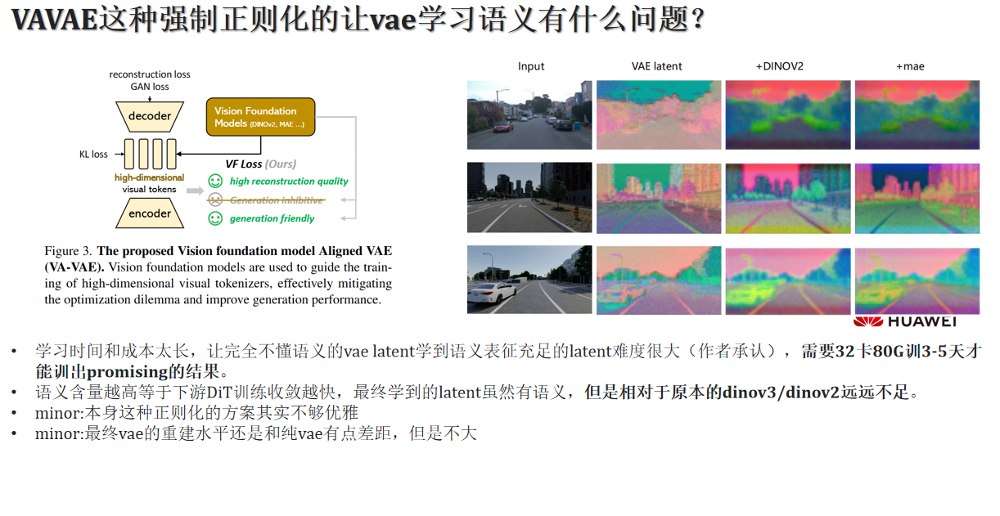
上图右侧是 VAE latent 的特征可视化对比（Input | VAE latent | +DINOv2[3:1] | +MAE[7:1]）。确实，加了 VFM 对齐之后，latent 的"色彩"和"分布"看起来更有语义感了。但是 Think deep：
问题 1：训练成本太高，且效果上限存疑
VAVAE[1:3] 的训练需要在 VAE 训练过程中同时 optimize 重建 loss 和 VF Loss。这个过程相当 expensive——作者承认需要 32 卡 × 80G GPU 训练 3–5 天才能出 promising 的结果。更关键的是，从根本上来说，你是在让一个以重建为目标训练的 VAE encoder 同时学习语义表征。这两个目标是存在内在张力的：重建要求保留所有细节（包括语义无关的高频纹理），语义表征需要主动过滤这些细节。VF Loss 作为正则项，只能缓解这个矛盾，不能消除它。
最终学到的 latent 虽然有语义，但相对于原本的 DINOv3/DINOv2 远远不足。
问题 2：方案在优雅性上有待增强
从工程角度看，VF Loss 这个设计需要仔细调 margin 超参数，adaptive weighting 的 trick 也增加了实现复杂度。之前强制对齐 VAE latent 和语义表征的方案略显暴力。
问题 3：重建水平略有下降（minor 但存在）
加了 VF Loss 之后，VAE 的重建指标（PSNR、SSIM）相比纯重建 VAE 会有轻微下降——虽然不大，但说明语义对齐确实在"消耗"一部分重建容量。
My Way：DinoOffsetVAE
带着观察到的这些问题，我直接尝试了一个更直接的思路：我们不用在 VAE 训练时强迫它对齐语义表征，而是将语义表征作为 VAE latent 的修正项。
于是有了 DinoOffsetVAE 这个方案。
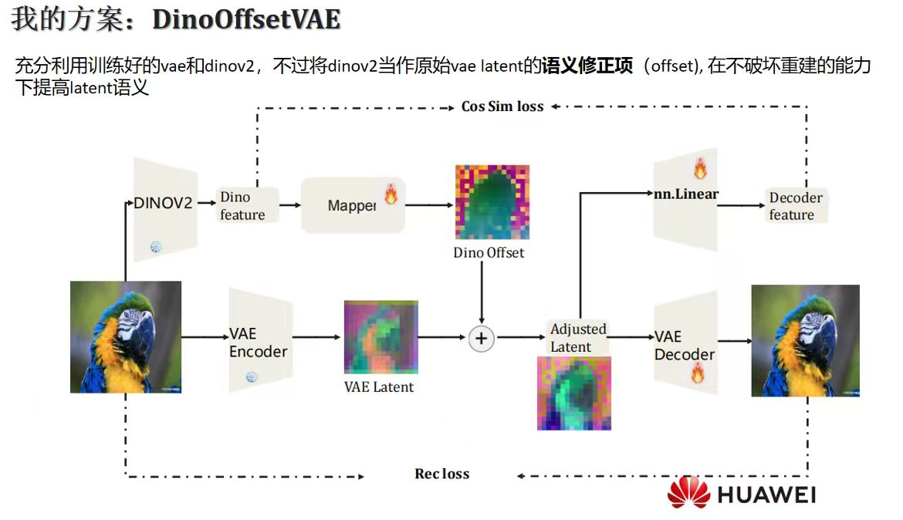
思路 very native：充分利用已经训练好的 VAE 和 DINOv2，不过将 DINOv2 当作原始 VAE latent 的语义修正项（offset），在不破坏重建能力的前提下提高 latent 的语义含量。
具体来说：
- VAE Encoder 正常提取 VAE Latent（冻结，不动）
- DINOv2 提取图像的语义特征（冻结，不动）
- 一个轻量级的 Mapper（可训练） 将 DINOv2 特征映射到和 VAE latent 同空间的 Dino Offset
-
- 用
nn.Linear将 Dino Offset 映射到 Decoder feature 维度，与 VAE Decoder 融合后重建图像
Loss 函数包含两部分：
- Rec loss：保证 Adjusted Latent 送进 VAE Decoder 后重建质量不下降
- Cos Sim loss：让 Adjusted Latent 的语义与 DINOv2 特征保持对齐
这个设计的好处在于：VAE 本身的重建能力完全不受影响（VAE Encoder 冻结），语义对齐完全由 Mapper 来承担，两者解耦得很干净。相比 VAVAE 从 scratch 训 VAE 的做法，这个方案轻量得多，可以在少得多的资源下快速验证。
实验结果
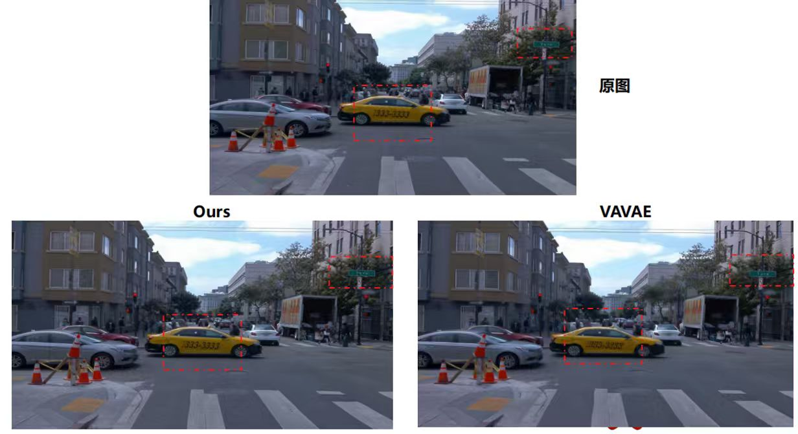
从上面的城市街道场景的重建可视化来看，我们的方案（Ours）在细节保留上相比 VAVAE 更接近原图，尤其是在地面纹理、车辆细节和建筑物边缘方面。
定量结果更加清晰：
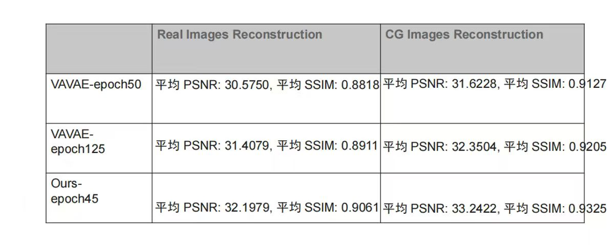
| 方法 | Real PSNR ↑ | Real SSIM ↑ | CG PSNR ↑ | CG SSIM ↑ |
|---|---|---|---|---|
| VAVAE-epoch50 | 30.58 | 0.8818 | 31.62 | 0.9127 |
| VAVAE-epoch125 | 31.41 | 0.8911 | 32.35 | 0.9205 |
| Ours-epoch45 | 32.20 | 0.9061 | 33.24 | 0.9325 |
仅需 45 epoch，我们的方案就超过了 VAVAE 训练 125 epoch 的结果，无论是真实图像还是 CG 图像的重建指标均如此。这也说明"解耦语义对齐和重建"这个思路的优越性——当两个目标不再相互竞争，各自都能收敛得更好、更快。
Deep Question：为什么不直接用 VFM 做 Tokenizer？
VAVAE 也好，DinoOffsetVAE 也好，本质上还是在 VAE 这个框架内修修补补。一个更根本的问题：
既然 VFM 特征对 DiT 训练这么有帮助，为什么不直接把 VFM 作为 tokenizer？
抛弃 VAE，直接用 DINOv3[4:1] 的特征做 diffusion 的目标分布，不是语义含量更高，更直接吗？
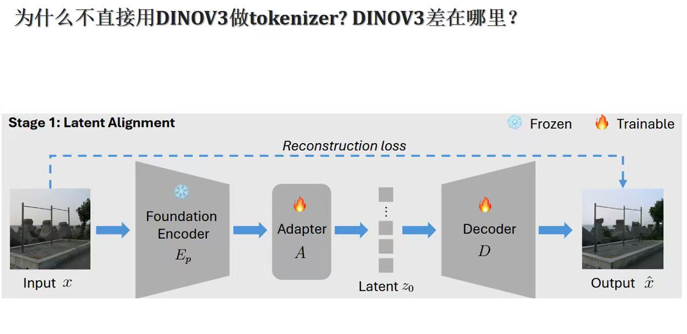
方案是：冻结 Foundation Encoder（DINOv3），在其后接一个轻量级的 trainable Adapter，将特征"适配"到目标 latent 维度，然后接一个 trainable Decoder 做重建。
结果是……
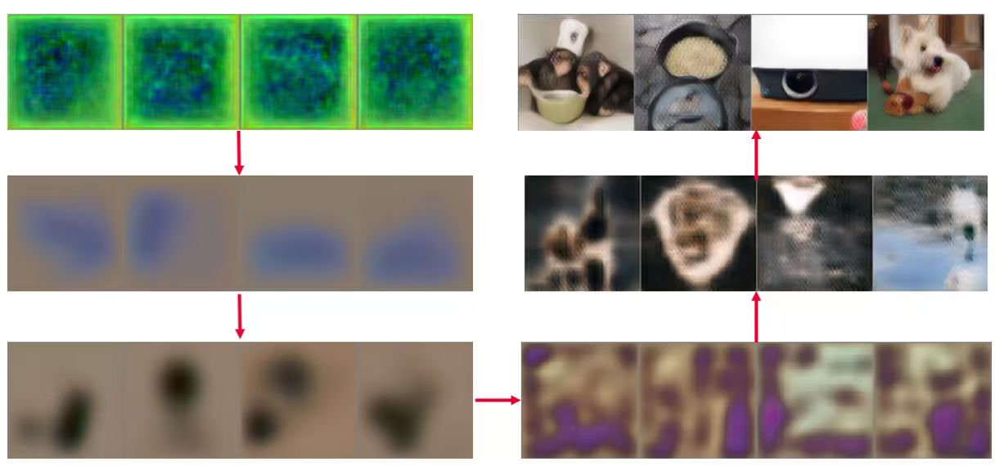
我们直接快进到收敛迭代的结果：
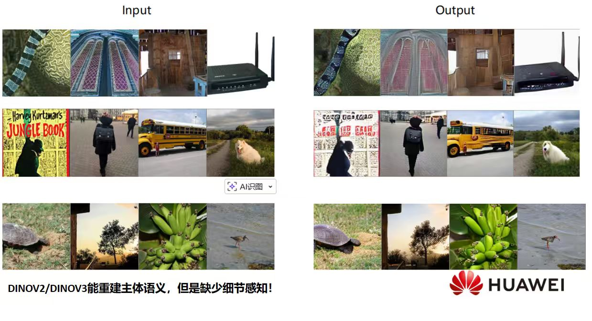
DINOv2/DINOv3 能重建主体语义——物体的位置、大概形状、类别信息——但是严重缺少细节感知：
- 路由器能认出是路由器，但细节纹理、天线的精细形状消失了
- 校车能认出是校车，但颜色不对、文字没了
- 香蕉的形状大概对，但颜色信息很差、叶子细节全无
这说明 VFM 本身作为 tokenizer 是 not enough 的：DINO 是在语义对比损失下训练的，它主动丢弃了高频、低语义的细节信息（颜色、纹理、精细纹路），因为这些信息对分类/检测等判别任务反而是噪声。Representation learning 的本质就是 eliminating unnecessary details（LeCun 的一句老话，但在这里找到了生成领域的具体体现）。
所以，直接用 VFM 做 tokenizer 的困境是：语义太多，细节太少——这恰好和 VAE tokenizer 的问题相反（VAE：细节太多，语义太少）。
这里还有一个不那么明显但很关键的工程问题。RAE[11] 论文（2510.11690）给出了一个严格的理论证明：当 DiT 的宽度（hidden dimension）小于 token 的 channel 维度时，flow matching loss 存在一个与数据分布无关的正下界：
从直觉上理解，扩散模型训练时会向数据注入高斯噪声，这相当于将数据流形"扩散"到整个高维空间——原本低维的流形支撑被扩展到了 full-rank 空间。如果 DiT 宽度不够，它根本没有能力表示这个 full-rank 分布，无论怎么训都无法收敛。
同期相同想法的 RAE 做了一个很有意思的实验验证：对一张图片过拟合，然后把 DiT 宽度从 384 逐渐增加到 768。当宽度 < token 维度（768）时，彻底失败；当宽度 ≥ token 维度时，立刻成功——是宽度，不是深度。
这说明直接用 DINOv2-ViT-B/16 的 768 维特征做 latent，需要相应地将 DiT 宽度也扩展到 768 以上。这不是没法做，但需要仔细的架构设计。
直接用 VFM 做 Tokenizer思路的发扬：SVG[12] 与 RAE[11:1]
同期同时有SVG[12:1]和RAE[11:2]迅速印证了我的观点，并分别独立地给出了自己的解答。
SVG：清华自动化的同期方案[12:2]
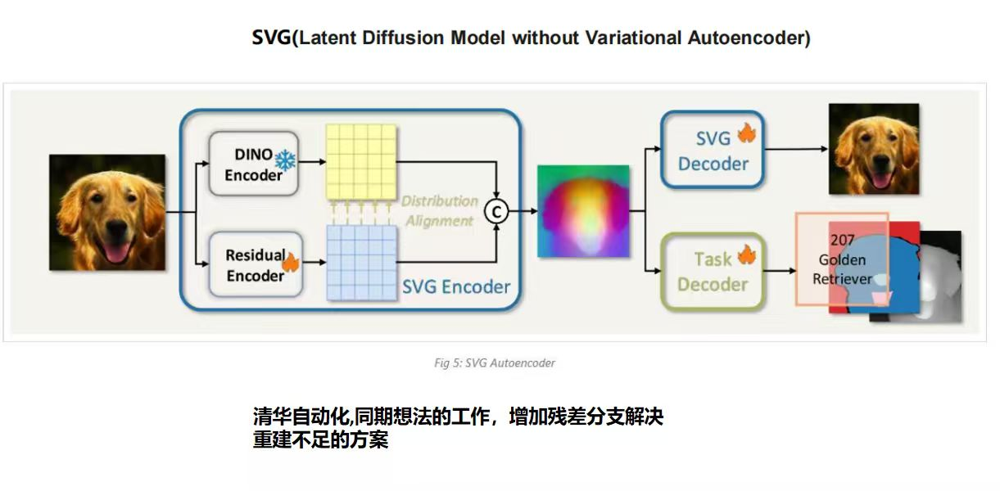
SVG（LDM without Variational Autoencoder，2510.15301）是来自清华自动化的工作，完全抛弃 VAE——用 DINOv3 特征加上一个 Residual Encoder 来构建新的 latent space：
Residual Encoder 专门负责补充 DINO 特征里缺失的颜色和细粒度感知细节，两路特征在 channel 维度上直接 concat。为了防止 Residual Encoder 的输出破坏 DINO 原有的语义分布，SVG 对残差特征做 batch-statistics 级别的对齐（Distribution Alignment）：
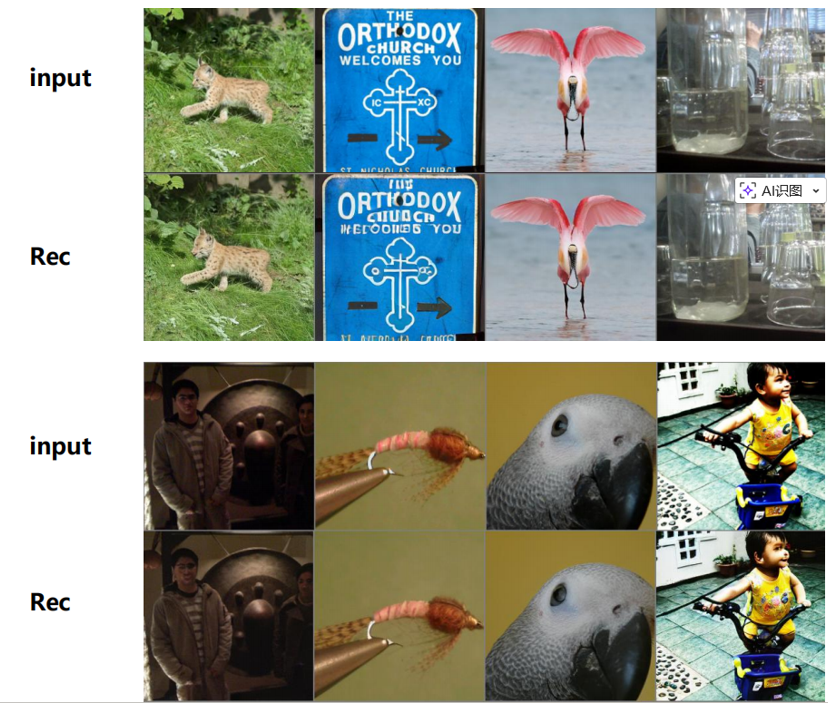
其实这步是这个设计中我认为最关键的一步，既保留了 DINO 的强语义判别性，又补充了生成所需的感知细节。最终的 SVG Feature 兼具语义判别性和重建能力，是一个 task-general 的统一特征空间——同一套特征可以同时支持生成、感知和语义理解任务。
为什么 SVG 能 work？ 从 latent space 的语义分散性（semantic discriminability）角度来分析：当 latent space 里同类别的样本聚集、不同类别的样本分散时，diffusion model 的 mean velocity 方向在同类别内是一致的、在不同类别间是相互区分的。这种结构化的速度场使得：
- DiT 学习更容易（方向更明确，歧义性低）
- 天然支持 few-step 采样（ODE 路径更直，5 步就能得到好结果）
对比之下，原始 SD-VAE latent 的语义纠缠使得不同类别的 velocity 方向混杂，DiT 需要更多步骤来"解开"这种歧义。
SVG 在 ImageNet 256×256 上（80 epoch，25 步采样）：gFID=6.57（w/o CFG），gFID=3.54（w/ CFG），训练 500 epoch 后进一步到 gFID=2.10（w/ CFG）——而且同时支持多个视觉任务，不只是生成。
RAE[11:3]
RAE[11:4]（Diffusion Transformers with Representation Autoencoders，2510.11690）来自纽约大学，做的事情更激进：直接用冻结的 VFM encoder（DINO/SigLIP/MAE）配上一个训练好的轻量 ViT decoder，组成 Representation Autoencoder（RAE），替换 SD-VAE。
这个工作挑战了两个长期被视为"常识"的假设：
-
“VFM 特征不能用于重建，因为丢失了低级细节”
→ 实验证明：配上合适的 ViT decoder，冻结的 DINO/SigLIP/MAE 特征重建质量全面优于 SD-VAE（MAE-B 的 rFID 0.16，DINO-B 的 rFID 0.49，vs SD-VAE 的 0.62） -
“高维 latent space 对 DiT 训练很困难”
→ 理论 + 实验证明：只要 DiT 宽度 ≥ token 维度，高维不是问题，反而是优势
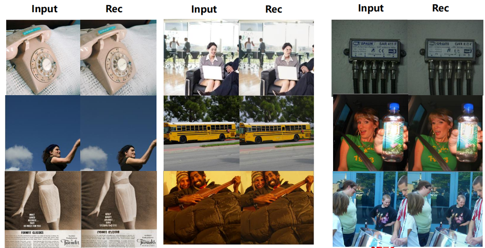
RAE 系统性地解决了直接使用高维 VFM 特征的三个工程挑战：
- 宽度缩放：DiT 宽度需 ≥ 768 → 引入 DDT head（宽但浅），在不增加 quadratic attention 成本的前提下增加模型宽度
- 噪声调度：原有基于分辨率的 noise schedule shift 没有考虑 channel 维度 → dimension-aware noise schedule
- 解码器鲁棒性：RAE decoder 训练时只见过干净 latent，推理时 DiT 输出有小量误差 → noise-augmented decoder training
最终，无需任何 REPA-style 的 alignment loss（因为 latent 本身就是语义丰富的），FID 1.51（无 guidance）/ 1.13（有 guidance），同时 encoder 计算量比 SD-VAE 少 6×，decoder 少 3×。
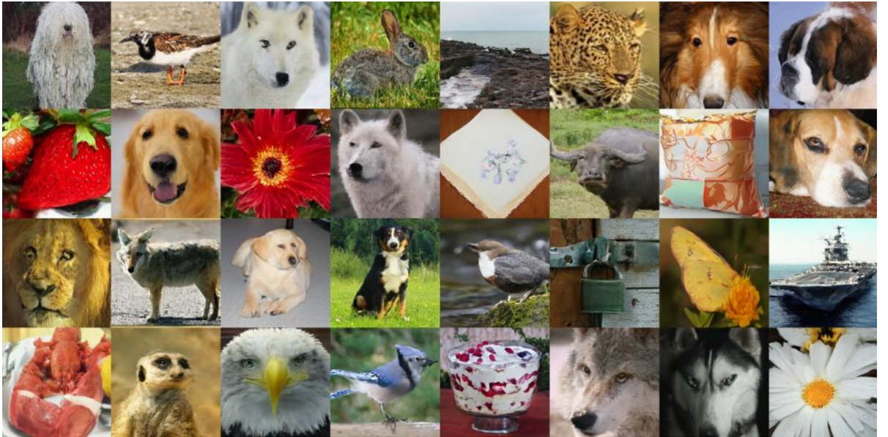
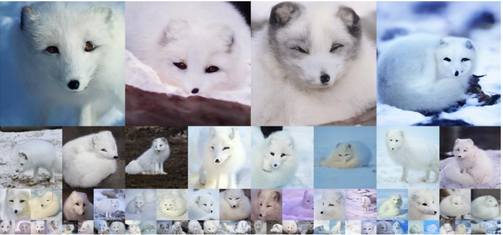
两条路殊途同归，都指向同一个结论：VFM 特征才是更自然的生成空间载体，只需要解决细节重建的问题，生成本身反而变得更容易。
此类工作的发展脉络总结
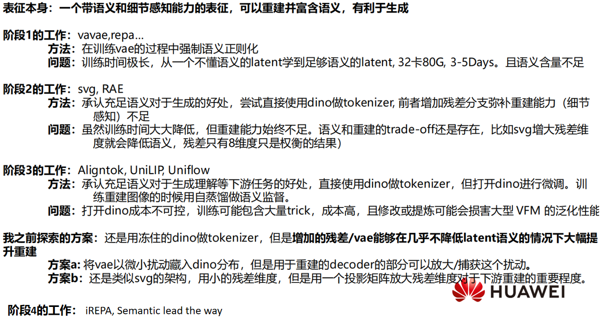
回头看整条发展脉络，其实每一个阶段都是在前一个阶段的问题上打补丁，是重建和生成性能的 trade-off，并没有让二者互补、相得益彰。
阶段 1（VAVAE[1:4]、REPA[2:2]）：思路是在训练 VAE 的过程中强制语义正则化，让 latent 向 DINOv2 对齐。逻辑上没问题，但代价是训练时间极长——从一个完全不懂语义的 latent 硬学到足够的语义含量，32 卡 80G 跑 3–5 天是常态。更根本的问题是效果上限：两个目标的内在张力始终存在，正则化力度有限，学出来的语义含量和 DINO 本身差得还很远。
阶段 2（SVG[12:3]、RAE[11:5]）：承认"冻结的 DINO 就是最好的语义来源"，直接把它当 tokenizer 用。SVG 用残差分支补细节，RAE 配轻量 ViT decoder 直接重建——训练成本直接砍掉一个数量级。但问题没有消失，只是换了个形式：SVG 把残差维度控制在 8 维，是因为维度一大语义就稀释了，这个 8 维本身就是个妥协，不是什么精心设计。语义和重建之间的 trade-off 还在那里，只是被压缩进了残差的维度选择里。
阶段 3（Aligntok[13]、UniLIP[14]、Uniflow[15]）：这批工作更激进——既然冻结 DINO 的语义上限突破不了，就干脆把 DINO 打开微调，在重建训练过程中用自蒸馏持续做语义监督。效果是有的，但开销和风险都很大：打开 DINO 之后训练里会涌现出各种 trick，成本变得难以控制；更重要的是，用领域内分布去 finetune 一个通用 VFM，泛化性的损失几乎是必然的，代价很难评估。
阶段 4（iREPA[16]、Semantic lead the way[17]）：这是目前还在起步阶段的方向——不再纠结于 tokenizer 设计，而是让语义表征更上游地引导整个生成过程。
Is There a Better Solution?
无论是 SVG[12:4] 的增加残差分支来补充 tokenizer 重建细节，还是 Uniflow[15:1] 这种打开 VFM 微调然后自蒸馏语义的方案，本质上都是在试图弥合语义和重建之间的 gap，但这个 gap 目前这些工作我都没有看到最优雅的解法——一种让 VAE 和 VFM 相得益彰的解法：让 tokenizer 完全保持住 VFM 的语义，但是大幅提升 tokenizer 的重建性能，直接到达 VAE 重建能力的大幅提升。
工程和 Scale Up 哲学的可行最优解

这种解法很可能是 DINOv4会尝试的方案——一个在训练 VFM 的时候就能够良好保持住结构等信息的、模型参数量大的、数据更 diverse 的（比如见过很多字，这样高频信息的 gap 似乎有机会弥补），这样训练出来的 tokenizer 既保持了语义，又具备了很好的重建能力，但似乎是很久之后才会做到的事情。
我的设想思路——将 VFM 的特征以一种特殊的扰动藏在 VAE Latent
这是我认为一个比较合理的方式，供大家参考，很可惜，实习后期暂时没有训出一个可行的版本。这部分我单独出一期博客，详细探讨一下当时的动机和尝试。
参考文献
Jingfeng Yao et al. “Reconstruction vs. Generation: Taming Optimization Dilemma in Latent Diffusion Models.” CVPR 2025. arXiv: 2501.01423 ↩︎ ↩︎ ↩︎ ↩︎ ↩︎
Sihyun Yu et al. “Representation Alignment for Generation: Training Diffusion Transformers Is Easier Than You Think.” ICLR 2025. arXiv: 2410.06940 ↩︎ ↩︎ ↩︎
Oquab, Maxime, et al. “Dinov2: Learning robust visual features without supervision.” arXiv preprint arXiv:2304.07193 (2023). ↩︎ ↩︎
Siméoni, Oriane, et al. “Dinov3.” arXiv preprint arXiv:2508.10104 (2025). ↩︎ ↩︎
He, Kaiming, et al. “Masked autoencoders are scalable vision learners.” Proceedings of the IEEE/CVF conference on computer vision and pattern recognition. 2022. ↩︎
Rombach, Robin, et al. “High-resolution image synthesis with latent diffusion models.” Proceedings of the IEEE/CVF conference on computer vision and pattern recognition. 2022. ↩︎
Robin Rombach, Andreas Blattmann, Dominik Lorenz, Patrick Esser, and Bj¨orn Ommer. High-resolution image synthesis with latent diffusion models. In Proceedings of the IEEE/CVF conference on computer vision and pattern recognition, pages 10684–10695, 2022. 2, 4, 5. ↩︎ ↩︎
Yu, Jiahui, et al. “Vector-quantized image modeling with improved vqgan.” arXiv preprint arXiv:2110.04627 (2021). ↩︎
Yu, Lijun, et al. “Magvit: Masked generative video transformer.” Proceedings of the IEEE/CVF Conference on Computer Vision and Pattern Recognition. 2023. ↩︎
Yi, Taoran, et al. “Gaussiandreamer: Fast generation from text to 3d gaussians by bridging 2d and 3d diffusion models.” Proceedings of the IEEE/CVF conference on computer vision and pattern recognition. 2024. ↩︎
Boyang Zheng et al. “Diffusion Transformers with Representation Autoencoders.” ICLR 2026. arXiv: 2510.11690 ↩︎ ↩︎ ↩︎ ↩︎ ↩︎ ↩︎
Minglei Shi et al. “Latent Diffusion Model without Variational Autoencoder.” ICLR 2026. arXiv: 2510.15301 ↩︎ ↩︎ ↩︎ ↩︎ ↩︎
Chen, Bowei, et al. “Aligning visual foundation encoders to tokenizers for diffusion models.” arXiv preprint arXiv:2509.25162 (2025). ↩︎
Tang, Hao, et al. “Unilip: Adapting clip for unified multimodal understanding, generation and editing.” arXiv preprint arXiv:2507.23278 (2025). ↩︎
Yue, Zhengrong, et al. “UniFlow: A Unified Pixel Flow Tokenizer for Visual Understanding and Generation.” arXiv preprint arXiv:2510.10575 (2025). ↩︎ ↩︎
Singh, Jaskirat, et al. “What matters for Representation Alignment: Global Information or Spatial Structure?.” arXiv preprint arXiv:2512.10794 (2025). ↩︎
Pan, Yueming, et al. “Semantics Lead the Way: Harmonizing Semantic and Texture Modeling with Asynchronous Latent Diffusion.” arXiv preprint arXiv:2512.04926 (2025). ↩︎